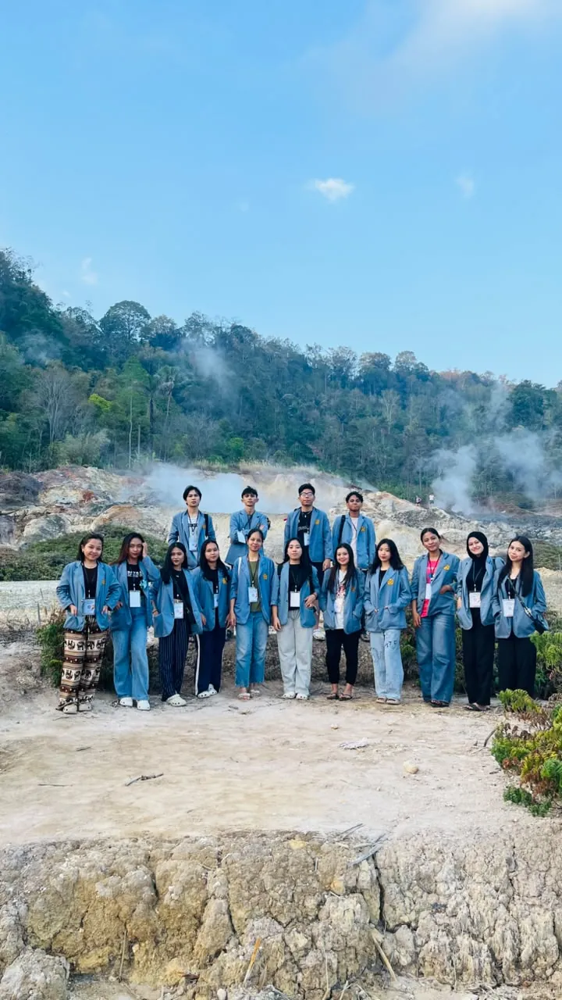

KKT Unsrat Angkatan 149
Mahasiswa Kuliah Kerja Terpadu Universitas Sam Ratulangi yang bertugas di Kelurahan Lahendong, sekaligus tim yang menyusun situs ini.
Kuliah Kerja Terpadu
Belajar bersama warga Lahendong
Tim KKT